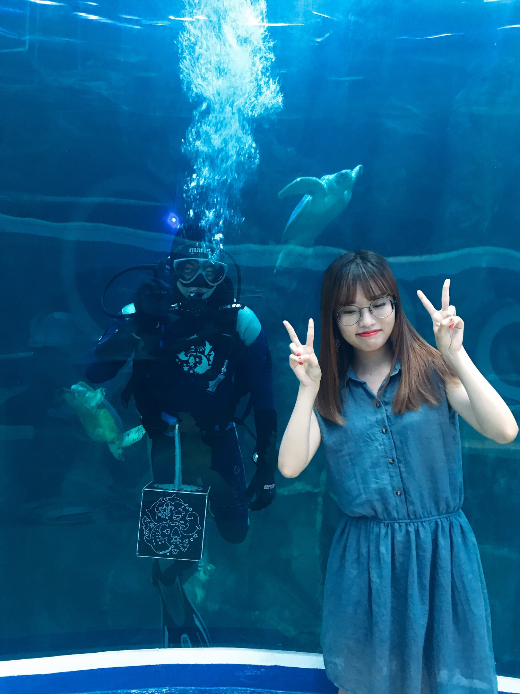
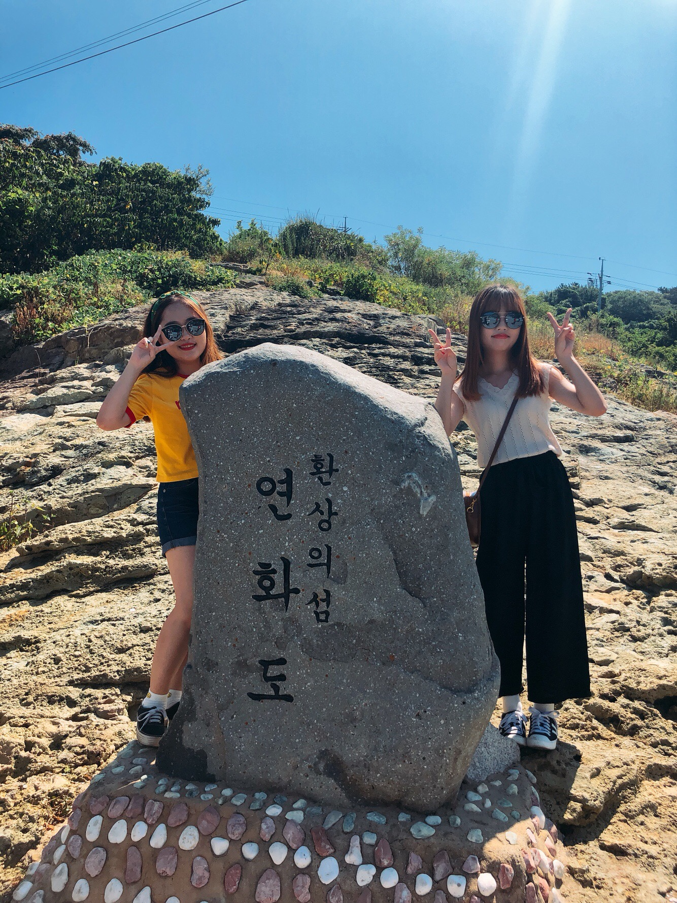
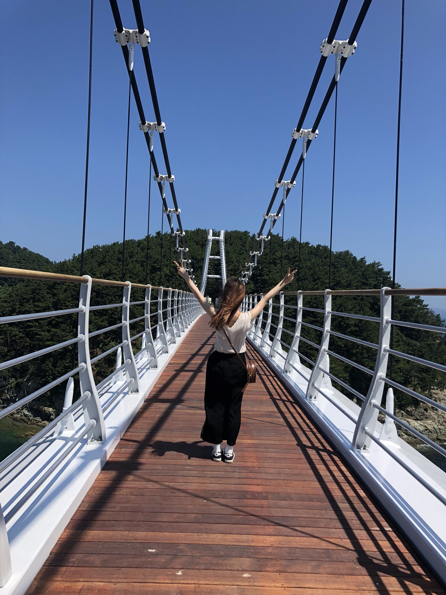

1. 아쿠아플라넷

가족들끼리 아쿠아리움은 많이 가봤지만 이렇게 큰 아쿠아플라넷은 처음 가봤다.
대형수족관으로 이루어진 수중터널을 지났을때, 마치 바닷속에 들어간 듯한 기분이 들었다.
큰 수조 안에서 돌고래가 하는 공연도 가까이 볼 수 있어서 좋았고,
엄청나게 큰 수조 안에서 사람이 직접 들어가 물고기들과 함께 공연하는 모습이 아직도 기억이 생생하게 남는다.
아쿠아플라넷에 갔으면 메인무대에서 하는 공연 꼭 보세요!!!
2. 연화도

연화도라는 곳을 들어가기 위해서는 정해진 시간에 배를 타고 들어가야 한다.
(돌아오는 배도 정해져있으므로 시간에 잘 맞춰야함!!!)
길이 좀 복잡하므로 지도를 보면서 이동하는 것을 추천!!
3. 욕지도 출렁다리

출렁다리를 집에서 티비를 통해서만 봤지 직접 눈앞에서 본 것은 처음이었다..
티비로 볼때는 '출렁다리가 무섭겠어~'하면서 걸어갈 수 있을꺼 같았는데 막상 걸어가려니 너무 무서워서 건너지도 못했다...
다음에 또 가게되면 다시 도전해봐야겠다!
고소공포증있는 사람들은 다른 코스가는 것을 추천!!